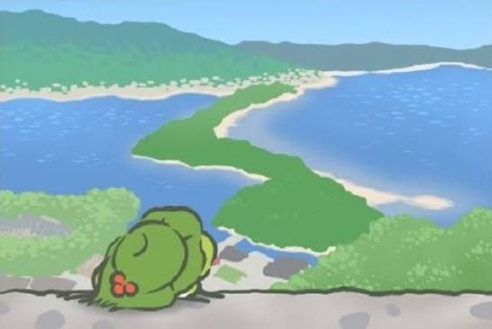
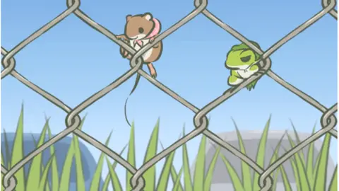

The frog travels alone
When it decides to travel, the frog can be away from a few hours to up to four days. During that time you cannot interact with it. You can only wait.

What it brings home
The frog returns with local specialties and photos of its trip. These are how you learn where it went.
Photos
hover or tap to flipEach player may receive slightly different pictures from the same destination.
Souvenirs
hover or tap to flipLocal specialties from the destination.
Silence
hover or tap to flipThe frog never shares its memories, so you piece the trip together.
Sharing
hover or tap to flipScreenshots can be posted directly from the game.
Real places
Although the frog and its destinations are left vague, its routes are realistic. Destinations and items were chosen by comparing them to an actual map.
